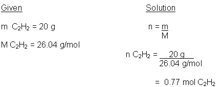
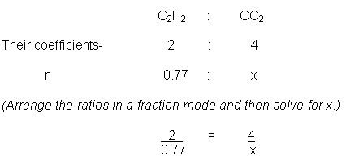
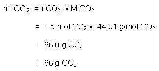

Unit 3: Quantities in Chemical Reactions
Activity 4: Stoichiometry
Content
Stoichiometry
|
|
Watch the videoclip Chemistry of the Miner’s Lamp ... but please be aware, that, depending on your Internet connection speed, all clips on this page may take a few minutes to download. You can always continue reading the remainder of this page while you wait. |
|---|
In the video, you probably noticed that there are two reactions that take place with the miner’s lamp. The combustion of acetylene gas is dependent on the amount of acetylene and the oxygen levels in the mine. In turn, the amount of acetylene is dependent on the amounts of calcium carbide and water that are stored in the lamp. There is a domino effect with these two reactions. The starting point, however, is the amount of calcium carbide and water.
Let’s look at the second reaction:
2C2H2(g) + 5O2 (g)  4CO2(g) + 2H2O(aq)
4CO2(g) + 2H2O(aq)
Oxygen gas is in more abundance than acetylene in the mine. When one reactant is available in abundance over and above what is needed, in chemistry, it is said to be in excess. That being the case, the amount of one reactant can be used to calculate the amount of each product that is produced and the actual amount of the other reactant that is needed for the reaction to proceed to completion. Calculations in chemistry involving these mass relationships in a balanced chemical reaction are called stoichiometry.
In stoichiometry questions where you are asked to calculate the mass of a reactant, or a product given the mass of another reactant or product in the balanced chemical reaction, there are two clues to look for and the question you should ask yourself is the following:
- Is one reactant in excess or is the mass of each reactant given in the question?
In the first example, we shall look at the approach of solving a stoichiometry question where one reactant’s mass is given and one reactant is in excess.
 Example
Example
Determine the mass of carbon dioxide gas that will be produced when 20 g of acetylene reacts with an excess amount of oxygen gas.
2C2H2(g) + 5O2 (g)  4CO2(g) + 2H2O(aq)
4CO2(g) + 2H2O(aq)
 Sample Solution (with Commentary)
Sample Solution (with Commentary)
(First Clue: Oxygen gas is in excess. The approach is as follows:
***Remember*** The coefficients in a balanced chemical reaction tell us about the mole relationships between the reactants and the products and therefore the given mass has to be turned into moles.)
Step 1:
(Find the number of moles of acetylene that are available for reaction.)

Step 2:
(On the basis of comparing the ratios of the respective coefficients of calcium carbide and a selected product, calculate the number of moles of the said product.)
Let x represent the amount of acetylene gas being produced.

(Using simple arithmetic) x = 1.5 mol CO2
(This tells us that 1.5 mol of carbon dioxide will be produced when 20 g of acetylene is used in this reaction. Wait, it’s not over. We still need to calculate the mass.)
Step 3 (Convert the moles into mass.)

 Question
Question
Determine the mass of acetylene when 50 g of calcium carbide reacts with an excess of water according the following balanced chemical reaction:
CaC2(g) + 2H2O(l) C2H2 + Ca(OH)2(aq)
 Answer
Answer
This is a disclaimer. External Resources will open in a new window. Not responsible for external content.
Unless otherwise indicated, all images in this Activity are from the public domain or are © clipart.com or Microsoft clipart and are used with permission.